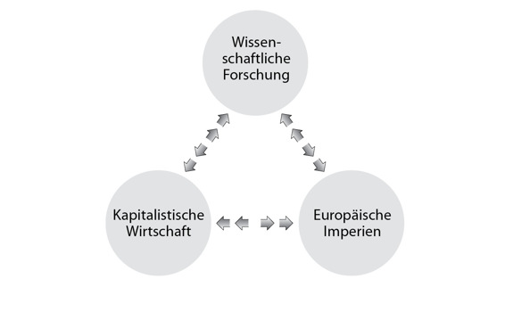

Kapitel 14
Die Entdeckung der Unwissenheit
In den vergangenen 500 Jahren hat die Menschheit einen phänomenalen Zuwachs an Macht erlebt. Die Entwicklung verlief so rasant und war so umfassend wie keine andere vor ihr. Wäre ein spanischer Bauer um das Jahr 1000 eingeschlafen und knapp 500 Jahre später vom Lärm der Matrosen geweckt worden, die mit Christoph Kolumbus die drei Segelschiffe Santa María, Niña und Pinta bestiegen, dann hätte sich die Welt in der Zwischenzeit kaum verändert. Er hätte zwar einige Veränderungen bemerkt, einige Gepflogenheiten waren anders und das eine oder andere Werkzeug hatte sich verändert, aber im Grunde genommen hätte er sich heimisch gefühlt. Wenn dagegen einer der Matrosen von Christoph Kolumbus eingeschlafen wäre und heute vom Klingeln eines iPhones geweckt würde, dann würde er buchstäblich die Welt nicht mehr verstehen. »Bin ich im Himmel?«, könnte er sich fragen. »Oder ist das die Hölle?«
Im Jahr 1500 lebten 500 Millionen Menschen auf unserem Planeten. Heute sind es 7 Milliarden.73 Im Jahr 1500 wurden auf der ganzen Welt Waren und Dienstleistungen im Wert von umgerechnet 250 Milliarden Dollar produziert.74 Heute sind es knapp 60 Billionen Dollar.75 Im Jahr 1500 verbrauchte die Menschheit pro Tag 13 Billionen Kalorien Energie. Heute verbrauchen wir pro Tag 1500 Billionen Kalorien.76 (Lassen Sie diese Zahlen einmal auf sich wirken: 14 mal so viele Menschen produzieren 240 mal so viel und verbrauchen dabei 115 mal so viel Energie.)
Wenn in den Tagen von Kolumbus ein modernes Kriegsschiff aufgekreuzt wäre, hätte es die Santa María, Niña und Pinta innerhalb von Sekunden zu Kleinholz verarbeiten und dann sämtliche Flotten der Welt auf den Meeresgrund schicken können, ohne selbst auch nur einen Kratzer abzubekommen. Fünf moderne Containerschiffe hätten die gesamte Fracht aller Handelsschiffe der Welt an Bord nehmen können.77 Auf einem modernen Computer finden sämtliche Bücher und Schriftrollen aller mittelalterlichen Bibliotheken spielend Platz, und es bleibt noch viel Platz für Ihre Urlaubsfotos. Und eine Bank der Gegenwart hat mehr Geld als alle vormodernen Weltreiche zusammengenommen.78
Im Jahr 1500 hatten nur wenige Städte mehr als 100000 Einwohner. Die Häuser waren meist aus Lehm, Holz und Stroh, und ein Gebäude mit drei Stockwerken war ein Wolkenkratzer. Auf den ungepflasterten Straßen wuselten Fußgänger, Pferde, Ziegen, Hühner und ein paar Handkarren. Man hörte menschliche Stimmen und Tierlaute, dazwischen hin und wieder einen Hammer oder eine Säge. Bei Sonnenuntergang legte sich völlige Dunkelheit über die Stadt, nur hier und da flackerte eine Kerze oder ein Kienspan. Was würde eine Einwohnerin einer solchen Stadt denken, wenn sie das moderne Tokio, New York oder Mumbai sehen könnte?
Vor dem 16. Jahrhundert hatte noch nie ein Mensch den gesamten Erdball umrundet. Das änderte sich erst im Jahr 1522, als Magellans Expedition nach einer 72000 Kilometer langen Reise nach Spanien zurückkehrte. Die Weltumseglung hatte drei Jahre gedauert und fast sämtliche Teilnehmer das Leben gekostet, Magellan eingeschlossen. Im Jahr 1873 konnte sich der französische Schriftsteller Jules Verne vorstellen, dass seine Romanfigur Phileas Fogg, ein reicher englischer Abenteurer, in achtzig Tagen um die Welt reiste. Und inzwischen kann jeder mit einem mittleren Einkommen die Erde innerhalb von 48 Stunden sicher und bequem umrunden.
Im Jahr 1500 waren die Menschen an die Erdoberfläche gefesselt. Sie konnten zwar Türme errichten und Berge besteigen, doch der Himmel war den Vögeln, Engeln und Göttern vorbehalten. Am 20. Juli 1969 landete der erste Mensch auf dem Mond. Das war nicht nur eine historische, sondern auch eine evolutionäre und kosmische Leistung. Vier Milliarden Jahre lang hatte kein Organismus auch nur die Erdatmosphäre verlassen und schon gar keinen Fuß oder Tentakel auf den Mond gesetzt.
Lange Zeit blieben den Menschen 99,99 Prozent aller Lebewesen auf dem Planeten verborgen: die Mikroorganismen. Nicht, dass ihre Existenz für uns nicht von Interesse gewesen wären. Jeder von uns trägt Abermilliarden von diesen einzelligen Lebewesen mit sich herum. Sie sind unsere besten Freunde und unsere ärgsten Feinde. Sie verdauen unsere Nahrung, räumen unseren Darm auf und hin und wieder bringen sie uns auch um. Doch erst im Jahr 1674 begegnete der Mensch dem ersten Mikroorganismus, als nämlich Anton van Leeuwenhoek durch sein selbstgebautes Mikroskop blickte und zu seiner Verblüffung in einem Wassertropfen eine ganze Welt von quirligen Kleinstlebewesen sah. In den folgenden drei Jahrhunderten haben die Menschen Bekanntschaft mit zahllosen Arten von Mikroorganismen gemacht, die tödlichsten Infektionskrankheiten besiegt und die Mikroorganismen in den Dienst der Medizin und Industrie gestellt. Heute stellen wir Bakterien her, die Medikamente und Biotreibstoffe produzieren und Parasiten töten.
Ein Augenblick, der diese erstaunliche Entwicklung der vergangenen 500 Jahre verkörpert wie kein anderer, ist der 16. Juli 1945, 5 Uhr 29 und 45 Sekunden. In diesem Moment zündeten amerikanische Wissenschaftler in Alamogordo, New Mexico, die erste Atombombe. Von diesem Zeitpunkt an hatte die Menschheit die Möglichkeit, der Geschichte nicht nur eine neue Richtung zu geben, sondern sie auch zu beenden.
*
Die historische Entwicklung, die uns nach Alamogordo und auf den Mond führte, wird als »wissenschaftliche Revolution« bezeichnet. Wenn die Menschheit während dieser Revolution einen derartigen Machtzuwachs erlebte, dann lag das daran, dass sie Ressourcen in die naturwissenschaftliche Forschung investierte. Eine Revolution ist es auch deshalb, weil die Menschheit vor dem Jahr 1500 nicht glaubte, dass sie auf medizinischem, militärischem oder wirtschaftlichem Gebiet Fortschritte erzielen konnte. Die Reichen und Mächtigen investierten zwar in Bildung und Wissen, doch dabei ging es ihnen vor allem darum, bestehende Fähigkeiten zu bewahren, und nicht darum, neue zu erwerben. Die typischen vormodernen Herrscher finanzierten Priester, Philosophen und Dichter, damit diese ihre Herrschaft legitimierten und die gesellschaftliche Ordnung aufrechterhielten. Ihre Aufgabe bestand nicht darin, neue Medikamente zu entwickeln, Waffen zu erfinden oder die Wirtschaft anzukurbeln.
In den zurückliegenden fünf Jahrhunderten glaubten dagegen immer mehr Menschen daran, dass sie zusätzliche Macht erwerben konnten, indem sie in die Forschung investierten. Das war indes kein blinder Glaube, denn es bestätigte sich überall und immer wieder. Und je mehr Beweise es gab, umso bereitwilliger investierten die Reichen und Mächtigen neue Mittel in die Wissenschaften. Diesem Glauben und den damit einhergehenden Investitionen haben wir es zu verdanken, dass wir heute zum Mond fliegen, neue Mikroorganismen schaffen und Atombomben zünden können.
Zum Beispiel gab die Regierung der Vereinigten Staaten in den vergangenen Jahrzehnten Abermilliarden an US-Dollars für die Kernforschung aus. Mit den daraus resultierenden Erkenntnissen konnten Atomkraftwerke errichtet werden, die billige Energie für die amerikanische Industrie lieferten. Diese zahlt Steuern an die Regierung der Vereinigten Staaten, die wiederum einen Teil dieser Einnahmen in die weitere Erforschung der Kernphysik investiert.
Der Selbstverstärkungseffekt der wissenschaftlichen Revolution. Die Wissenschaft benötigt mehr als nur Forschungsergebnisse, um Fortschritte zu erzielen. Sie ist auf die gegenseitige Verstärkung von Wissenschaft, Politik und Wirtschaft angewiesen. Politische und wirtschaftliche Institutionen stellen die Ressourcen zur Verfügung, ohne die wissenschaftliche Forschung kaum möglich wäre. Im Gegenzug schafft die Wissenschaft neue Macht, die zum Teil auf den Erwerb neuer Ressourcen verwendet wird, und diese wiederum werden zum Teil in die Forschung investiert.
Warum glaubten in der Neuzeit immer mehr Menschen daran, dass ihnen die Forschung neue Macht verschaffen konnte? Wie kam das Bündnis aus Wissenschaft, Politik und Wirtschaft zustande? In diesem Kapitel sehen wir uns den einmaligen Charakter der modernen Wissenschaften an. In den nächsten beiden geht es um das Bündnis, das die Wissenschaften, die europäischen Kolonialreiche und die kapitalistische Wirtschaft eingingen.
Wir wissen, dass wir nichts wissen
Spätestens seit der kognitiven Revolution verspüren die Menschen ein unwiderstehliches Bedürfnis, das Universum zu verstehen. Unsere Vorfahren verwendeten viel Zeit darauf, den Geheimnissen der Natur auf den Grund zu gehen. Doch die moderne wissenschaftliche Tradition unterscheidet sich durch eine Kombination von drei wesentlichen Eigenschaften von allen anderen Wissenstraditionen:
1. Das Eingeständnis der Unwissenheit. Die moderne Wissenschaft ist bereit zuzugeben, dass sie nicht alles weiß. Mehr noch, sie geht davon aus, dass alles, was wir zu wissen glauben, durch neue Erkenntnisse widerlegt werden kann. Es gibt keine Vorstellung und keine Theorie, die nicht hinterfragt werden kann.
2. Die zentrale Bedeutung von Beobachtung und Mathematik. Nachdem sie ihre Unwissenheit zugegeben hat, versucht die moderne Wissenschaft, neues Wissen zu erwerben. Dazu sammelt sie Beobachtungen und verknüpft diese mit Hilfe mathematischer Instrumente zu allgemeingültigen Theorien.
3. Der Erwerb neuer Fähigkeiten. Die moderne Wissenschaft gibt sich nicht damit zufrieden, Theorien aufzustellen. Sie nutzt diese Theorien, um neue Fähigkeiten zu erwerben und vor allem neue Technologien zu entwickeln.
Die wissenschaftliche Revolution war keine Revolution des Wissens, sondern vor allem eine Revolution der Unwissenheit. Die große Entdeckung, mit der die wissenschaftliche Revolution losgetreten wurde, war die Erkenntnis, dass wir Menschen nicht im Besitz der Wahrheit sind, und dass wir auf die wichtigsten Fragen keine Antworten wissen.
Vormoderne Wissenstraditionen im Islam, Christentum, Buddhismus oder Konfuzianismus erklärten, dass alles, was es über die Welt zu wissen gab, bereits bekannt war. Die mächtigen Götter, der eine und allmächtige Gott oder die großen Weisen der Vergangenheit waren bereits im Besitz aller Weisheit und aller Antworten, und sie offenbarten uns diese in ihren Schriften und mündlichen Überlieferungen. Wissenserwerb bedeutete, diese alten Weisheiten gründlich zu studieren. Es war unvorstellbar, dass die Bibel, der Koran oder die Vedas ein entscheidendes Geheimnis des Universums übersehen haben könnten, und dass es an gewöhnlichen Sterblichen sein könnte, dieses Geheimnis zu lüften.
Diese Traditionen kennen nur zwei Arten von Unwissenheit: Erstens könnten Einzelne aus irgendeinem Grund eine entscheidende Erkenntnis nicht mitbekommen haben. In diesem Fall müssen sie nur einen weiseren Menschen fragen. Es besteht keinerlei Notwendigkeit, Neues zu entdecken. Ein Bauer des 13. Jahrhunderts mochte nicht wissen, woher die Menschheit kam. Doch die christliche Tradition hatte die Antwort, und der Bauer konnte einfach einen Geistlichen fragen.
Und zweitens kann eine ganze Wissenstradition keine Kenntnis von unbedeutenden Details haben. Was die mächtigen Götter nicht offenbarten und was die Weisen der Vergangenheit nicht in ihre Schriften aufnahmen, war definitionsgemäß irrelevant. Wenn unser mittelalterlicher Bauer wissen wollte, wie Spinnen ihr Netz weben, dann hatte es wenig Sinn, sich mit dieser Frage an einen Geistlichen zu wenden, denn die Heilige Schrift hatte nichts über Spinnen zu sagen. Das bedeutet nicht, dass das Christentum unzureichend gewesen wäre, es heißt nur, dass diese Frage keinerlei Relevanz hatte. Gott wusste schließlich, wie Spinnen ihr Netz weben. Wenn diese Information zum Seelenheil der Menschheit beigetragen hätte, dann hätte er eine umfassende Erklärung in die Bibel aufgenommen.
Das Christentum verbot die Beschäftigung mit Spinnen zwar nicht ausdrücklich. Doch ein Spinnenforscher – wenn es so etwas im Europa des Mittelalters überhaupt gegeben haben sollte – musste seine Randstellung in der Gesellschaft anerkennen und einsehen, dass er mit seinen Erkenntnissen nichts zu den ewigen Wahrheiten des Christentums beizutragen hatte. So viel ein Wissenschaftler auch über Spinnen, Schmetterlinge oder Galapagosfinken herausfinden mochte, es handelte sich um Banalitäten, mit denen er den grundlegenden Wahrheiten der Gesellschaft, Politik und Wirtschaft nichts hinzufügen konnte.
Ganz so einfach war das natürlich nie. Selbst in allerfrömmsten Zeiten gab es immer Menschen, die behaupteten, es gebe sehr wohl zentrale Fragen, zu denen die Weisen und die Heiligen Schriften keine Antwort wussten. Doch solche Menschen wurden in der Regel verfolgt oder zum Schweigen gebracht, oder aber sie gründeten ihre eigene Tradition und behaupteten nun ihrerseits, dass sie alles wüssten, was es zu wissen gab. Der Prophet Mohammed begann beispielsweise seine Laufbahn, indem er seine arabischen Landsleute beschuldigte, fern der göttlichen Wahrheit zu leben. Schon bald ging er dazu über zu behaupten, er selbst befinde sich im Besitz dieser Wahrheit, und seine Anhänger nannten ihn »das Siegel der Propheten«. Das heißt, Mohammed hatte das letzte Wort gesprochen, und über seine Offenbarungen hinaus war kein weiteres Wissen mehr nötig.
Die modernen Wissenschaften bringen dagegen ein völlig neues Wissensverständnis mit und gehen davon aus, dass die Menschheit die wichtigsten Fragen nach wie vor nicht beantworten kann. Darwin bezeichnete sich nie als »das Siegel der Biologie« und behauptete nie, er habe das Rätsel des Lebens ein für allemal gelöst. Auch nach Jahrhunderten der Forschung geben Biologen freimütig zu, dass sie noch immer nicht wissen, wie das Bewusstsein im Gehirn entsteht. Und Physiker gestehen unumwunden, dass sie den Urknall nicht erklären können und keine Ahnung haben, wie sie die Quantenmechanik und die Relativitätstheorie unter einen Hut bringen sollen.
Widersprüchliche wissenschaftliche Theorien werden anhand von immer neuen Beweisen hitzig debattiert. Ein gutes Beispiel ist die Ökonomie: Wirtschaftswissenschaftler verkaufen ihre jeweilige Theorie zwar gern als die beste und einzig richtige, doch nach jeder Finanzkrise und jeder Aktienblase werden neue Theorien aufgestellt, und die meisten Experten geben zu, dass das letzte Wort noch längst nicht gesprochen ist.
Es kommt zwar durchaus vor, dass eine Theorie gründlich bewiesen ist und mögliche Alternativen längst zu den Akten gelegt sind. Solche Theorien gelten als wahr, doch wenn neue Entdeckungen gemacht werden sollten, die sie in Frage stellen, dann müssten sie korrigiert oder verworfen werden. Das trifft zum Beispiel auf die Plattentektonik oder die Evolutionstheorie zu.
Aufgrund dieser Bereitschaft, ihre eigene Unwissenheit einzugestehen, ist die moderne Wissenschaft dynamischer, flexibler und neugieriger als alle früheren Wissenstraditionen. Dies ist ein hervorragender Ausgangspunkt, um neues Wissen zu erwerben und neue Techniken zu erfinden. Daneben stellt es jedoch ein Problem dar, mit dem sich unsere Vorfahren nicht auseinandersetzen mussten. Wenn wir davon ausgehen, dass wir nicht alles wissen, und dass unser Wissen vorläufig ist, dann trifft dies natürlich auch auf die gemeinsame Mythen zu, die wir benötigen, um die effektive Zusammenarbeit von Millionen von Menschen zu organisieren. Wenn bewiesen wird, dass viele dieser Mythen mindestens zweifelhaft sind, wie sollen sie dann eine Gesellschaft zusammenhalten? Wie können Gemeinschaften, Staaten und internationale Systeme dann überhaupt noch funktionieren?
Daher muss jeder Versuch, die gesellschaftliche und politische Ordnung aufrechtzuerhalten, zu einem von zwei unwissenschaftlichen Tricks greifen:
1. Man nehme eine wissenschaftliche Theorie und erkläre sie zur endgültigen und absoluten Wahrheit, auch wenn dies der gängigen wissenschaftlichen Praxis widerspricht. Diesen Trick verwendeten die Nationalsozialisten (die ihre Rassentheorien auf vermeintliche biologische Erkenntnisse stützten) oder die Kommunisten (die behaupteten, Marx und Lenin hätten die unwiderlegbare Wahrheit über die Wirtschaft erkannt).
2. Man klammere die Wissenschaft aus und halte sich an eine absolute Wahrheit, die nicht aus der Wissenschaft stammt. So geht der liberale Humanismus mit seinem Dogma von der Einmaligkeit des Menschen und den daraus abgeleiteten Menschenrechten vor, das leider sehr wenig mit der wissenschaftlichen Erforschung des Homo sapiens zu tun hat.
Das sollte uns allerdings nicht weiter überraschen. Selbst die Wissenschaft greift immer wieder auf religiöse und ideologische Überzeugungen zurück, um ihre Forschung zu rechtfertigen und zu finanzieren.
Trotzdem zeigt unsere moderne Kultur größere Bereitschaft als jede andere, ihre Unwissenheit anzuerkennen. Wenn die Moderne ihre gesellschaftliche Ordnung trotz der neuen Mode des Zweifels aufrechterhalten konnte, dann liegt das vor allem daran, dass eine fast religiöse Technologie- und Wissenschaftsgläubigkeit aufkam, die den Glauben an absolute Wahrheiten weitgehend verdrängt hat.
Das Dogma der Wissenschaft
Die moderne Wissenschaft hat kein Dogma. Sie verwendet jedoch einige verbindliche Forschungsmethoden und basiert auf empirischen Beobachtungen, aus denen sie mit Hilfe mathematischer Modelle ihre Schlüsse zieht (»empirisch« bedeutet, dass wir sie mit mindestens einem unserer Sinne wahrnehmen können).
Natürlich haben Menschen schon immer ihre Umwelt beobachtet, doch sie maßen diesen Beobachtungen nur geringe Bedeutung bei. Die Menschen glaubten, dass Jesus, Buddha, Konfuzius, Mohammed oder irgendjemand sonst schon alles wusste, was man wissen musste. Der Wissenserwerb beschränkte sich daher darauf, einen vorhandenen Kanon zu studieren und umzusetzen. Warum sollte man wertvolle Ressourcen darauf verschwenden, neue Beobachtungen zu sammeln, wenn wir doch schon alle Antworten hatten?
Aber nachdem unsere Kultur erkannte, wie wenig sie in Wirklichkeit wusste, musste sie völlig neues Wissen erwerben. Unsere Forschungsmethode geht daher davon aus, dass alles alte Wissen unzureichend ist. Statt vorhandene Bibliotheken auswendig zu lernen, legt die Wissenschaft daher den Schwerpunkt auf neue Beobachtungen und Experimente. Wann immer eine neue Beobachtung zum bestehenden Wissen in Widerspruch steht, geben wir der Beobachtung den Vorrang. Das bedeutet nicht, dass frühere Erkenntnisse keinen Wert mehr haben. Physiker, die das Spektrum ferner Galaxien analysieren, Archäologen, die Funde aus einer bronzezeitlichen Ausgrabungsstätte auswerten, und Politikwissenschaftler, die den Ursprung des Kapitalismus untersuchen, fangen nicht jedes Mal bei null an. Natürlich beschäftigen sie sich zunächst mit den Entdeckungen der alten Gelehrten. Doch vom ersten Semester an ist angehenden Physikern, Archäologen und Politikwissenschaftlern klar, dass sie Albert Einstein, Heinrich Schliemann und Max Weber hinter sich lassen müssen.
*
Bloße Beobachtungen sind natürlich noch kein Wissen. Um das Universum zu verstehen, müssen wir unsere Beobachtungen zu umfassenden Theorien zusammensetzen. Frühere Traditionen formulierten ihre Theorien meist in Form von Erzählungen. Die modernen Wissenschaften verwenden dazu die Mathematik.
In der Bibel, dem Koran, den Vedas oder den klassischen konfuzianischen Texten suchen wir vergeblich nach Gleichungen, Diagrammen und Berechnungen. Wenn traditionelle Mythen und Heilige Schriften ihre allgemeinen Grundsätze formulierten, dann taten sie dies mit Hilfe von Gleichnissen, nicht mit mathematischen Formeln. Ein Grundprinzip des Manichäismus besagte beispielsweise, dass die Welt ein Schlachtfeld im ewigen Kampf von Gut und Böse ist. Die böse Kraft hatte die Materie erschaffen, und die gute den Geist. Die Menschen waren zwischen diesen beiden Kräften gefangen und mussten sich zwischen Gut und Böse entscheiden. Doch der Prophet Mani unternahm keinen Versuch, die Beziehung zwischen Gut und Böse mit exakten mathematischen Gleichungen zu beschreiben. Er stellte keine Formeln auf wie »die auf den Menschen wirkende Kraft ist gleich der Beschleunigung seines Geistes dividiert durch die Masse seines Körpers«.
Aber genau das versuchen die Wissenschaftler. Im Jahr 1687 veröffentlichte Isaac Newton seine Mathematischen Prinzipien der Naturlehre, das vielleicht wichtigste Buch der modernen Geschichte. Hier stellte Newton eine allgemeine Theorie zur Bewegung aller Körper des Universums auf. Ihre Bedeutung verdankt Newtons Theorie ihrer erstaunlichen Kürze und Klarheit. Newton verdichtete Millionen von Beobachtungen und stellte drei einfache Formeln auf, mit denen sich die Bewegung eines fallenden Blatts genauso beschreiben ließ wie die Flugbahn eines Kometen:
Wer die Flugbahn einer Kanonkugel oder eines Planeten verstehen oder vorhersagen wollte, musste nun nur noch einige empirische Beobachtungen über das fragliche Objekt sammeln (Welche Masse hat es? Welche äußeren Kräfte wirken?) und diese Beobachtungen in Newtons Formeln einsetzen. Es war die reinste Magie. Erst gegen Ende des 19. Jahrhunderts machten Wissenschaftler Beobachtungen, die sich nicht mit den Newtonschen Gesetzen in Einklang bringen ließen, und diese führten zu den nächsten Revolutionen in der Physik, der Relativitätstheorie und der Quantenmechanik.
*
Newton zeigte, dass das Buch der Natur in der Sprache der Mathematik geschrieben ist. Einige Kapitel sind recht einfach und lassen sich auf simple Gleichungen reduzieren. Andere sind dagegen unglaublich kompliziert. Immer wieder haben Wissenschaftler versucht, die Biologie, Wirtschaft oder Psychologie in einfachen Newtonschen Gleichungen zu beschreiben, nur um festzustellen, dass die Wirklichkeit viel zu komplex ist. Trotzdem gaben die Wissenschaftler die Mathematik nicht auf. Stattdessen bedienten sie sich bei der Statistik und der Wahrscheinlichkeitsrechnung, um die komplexeren Aspekte der Wirklichkeit zu verstehen.
Im Jahr 1744 beschlossen die beiden schottischen Geistlichen Robert Wallace und Alexander Webster, eine Altersversicherung für die Witwen von Priestern der Presbyterianischen Kirche einzurichten. Dazu sollte jeder Geistliche jedes Jahr einen bestimmten Anteil seines Einkommens in eine Rentenkasse einbezahlen. Nach seinem Tod sollte die Witwe Ausschüttungen aus den Gewinnen dieser Kasse erhalten, die ihr ein angenehmes Alter ermöglichen sollten. Um die Finanzierung zu sichern, mussten die Gesellschafter jedoch genau wissen, wie viele Geistliche jedes Jahr starben, wie viele Witwen und Waisen zu versorgen waren, und um wie viele Jahre die Witwe ihren Mann überlebte. Aber wie ließ sich das vorhersagen?
Die beiden Kirchenmänner beteten nicht zu Gott, er möge ihnen die Antwort geben. Sie suchten auch nicht in der Heiligen Schrift und begannen keine philosophische Diskussion. Vielmehr baten die pragmatischen Schotten den Mathematiker Colin Maclaurin von der Universität von Edinburgh um Hilfe, und zu dritt werteten sie aktuelle statistische Daten zu Geburten, Todesfällen und durchschnittlichen Lebenserwartungen aus, um zu ermitteln, wie viele Priester durchschnittlich im Laufe eines Jahres starben. Bei ihrer Arbeit stützten sie sich auf die neuesten Erkenntnisse auf dem Gebiet der Statistik und der Wahrscheinlichkeitsrechnung, zum Beispiel Jacob Bernoullis Gesetz der großen Zahlen. Dieses Gesetz besagt, dass ein einzelnes Ereignis (zum Beispiel die Lebenserwartung einer ganz bestimmten Person) zwar sehr schwer vorherzusehen ist, dass sich das durchschnittliche Ergebnis vieler ähnlicher Ereignisse (zum Beispiel die Lebenserwartung von tausend Personen) sehr wohl vorhersagen lässt. Maclaurin konnte zwar nicht vorhersagen, wann Webster und Wallace das Zeitliche segnen würden, doch wenn er genug Daten zur Verfügung hatte, konnte er mit einiger Sicherheit ermitteln, wie viele ihrer Kollegen nächstes Jahr sterben würden. Zum Glück gab es bereits Daten, auf die er zurückgreifen konnte. Als besonders wichtig erwiesen sich die Versicherungstabellen, die ein gewisser Edmund Halley, der Entdecker des nach ihm benannten Kometen, fünfzig Jahre zuvor veröffentlicht hatte. Diese Tabellen basierten wiederum auf den Daten von 1238 Geburten und 1174 Todesfällen in der Stadt Breslau, und dort hieß es zum Beispiel: »Ein 20-jähriger stirbt mit einer Wahrscheinlichkeit von 1:100 in diesem Jahr, ein 50-jähriger stirbt dagegen mit einer Wahrscheinlichkeit von 1:39 in diesem Jahr.«
Nach komplizierten Berechnungen ermittelten Webster und Wallace, dass zu jedem beliebigen Zeitpunkt 930 Geistliche der Presbyterianischen Kirche Schottlands am Leben waren. Davon starben pro Jahr durchschnittlich 27. Von diesen 27 hinterließen 18 eine Witwe und 5 nur Waisen, aber keine Witwe. Von den 18, die vor ihrer Frau das Zeitliche segneten, hinterließen 2 minderjährige Kinder aus früheren Ehen. Dann errechneten sie, in welchem Zeitraum die Witwen wieder heirateten (und damit den Anspruch auf ihre Witwenrente verloren). Ausgehend von diesen Berechnungen ermittelten Webster und Wallace, wie viel die Geistlichen jährlich in die Rentenkasse einzahlen mussten, um für ihre Hinterbliebenen zu sorgen. Die niedrigste Rate lag bei 2 Pfund, 12 Schilling und 2 Pence pro Jahr (damit sicherten sie ihrer Witwe eine Jahresrente von 10 Pfund, was damals eine ordentliche Summe war). Mit der höchsten Rate von 6 Pfund, 11 Schilling und 3 Pence pro Jahr garantierten sie der Witwe eine fürstliche Jahresrente von 25 Pfund.
Nach ihren Berechnungen sollte der Rentenfonds bis zum Jahr 1765 über ein Kapital von 58.348 Pfund verfügen. Ihre Berechnungen erwiesen sich als erstaunlich exakt: Im Jahr 1765 wiesen die Bücher ein Kapital von 58.347 Pfund aus – sie hatten sich um ein einziges Pfund verrechnet! Das war mindestens so gut wie die Prophezeiungen von Habakuk, Jeremias oder Johannes. Heute ist die von Webster und Wallace ins Leben gerufene Rentenkasse »Scottish Widows« eines der größten Versicherungsunternehmen der Welt. Es versichert nicht nur schottische Witwen, sondern Kunden in aller Welt, und verfügt über ein Vermögen von 100 Milliarden Pfund Sterling.79
Wahrscheinlichkeitsrechnungen wie die der beiden schottischen Kirchenmänner wurden nicht nur zur Grundlage der Versicherungsmathematik (ein unentbehrliches Werkzeug des Renten- und Versicherungswesen), sondern auch für die Bevölkerungsforschung (die ebenfalls auf einen Geistlichen, nämlich den anglikanischen Pfarrer Thomas Malthus zurückgeht). Diese wiederum war das Fundament, auf dem Charles Darwin (der fast anglikanischer Pfarrer geworden wäre) seine Evolutionstheorie errichtete, die weniger mit Gleichungen als mit Wahrscheinlichkeitsrechnungen arbeitet. (Es gibt keine Formel, um zu berechnen, wie sich ein ganz bestimmter Organismus entwickelt. Vielmehr berechnet die Evolutionstheorie Wahrscheinlichkeiten, mit denen genetische Mutationen weitergegeben werden.) Die Wahrscheinlichkeitsrechnung fand nach und nach auch Eingang in die Wirtschaftswissenschaften, Soziologie, Psychologie, Politikwissenschaften und eine Reihe anderer Gesellschafts- und Naturwissenschaften. Selbst die Physik verließ schließlich den sicheren Boden der Newtonschen Formeln und wagte sich in die Unschärfen der Quantenmechanik vor.
*
Wenn wir sehen wollen, wie weit diese Entwicklung inzwischen geht, müssen wir nur einen Blick in die Lehrpläne unserer Schulen und Universitäten werfen. Früher war die Mathematik eine exotische Disziplin, mit der sich nur eine kleine Minderheit von Experten beschäftigte. Im Mittelalter standen vor allem die drei Fächer Logik, Grammatik und Rhetorik (das sogenannte Trivium) auf dem Stundenplan, und der Mathematikunterricht ging kaum über einfache Arithmetik und Geometrie hinaus. Niemand beschäftigte sich mit Statistik, von Wahrscheinlichkeiten ganz zu schweigen. Das wichtigste Fach war die Theologie.
Heute besuchen nur noch Philosophiestudenten Kurse in Logik oder Rhetorik und nur angehende Priester und Religionslehrer studieren Theologie. Aber immer mehr sind dazu gezwungen, Mathematikkurse zu belegen. Wir beobachten eine unaufhaltsame Verschiebung hin zu den »exakten« Wissenschaften, die deshalb exakt heißen, weil sie mit den Instrumenten der Mathematik arbeiten. Selbst Fächer, die in der Vergangenheit zu den Geisteswissenschaften zählten, etwa die Erforschung der menschlichen Sprache (Linguistik) oder Psyche (Psychologie) bedienen sich zunehmend bei der Mathematik und schmücken sich mit der Bezeichnung »exakte Wissenschaft«. Heute müssen nicht nur Studierende der Physik oder Biologie mathematische Fächer belegen, sondern auch Psychologen, Soziologen, Wirtschafts- und Politikwissenschaftler müssen sich mit Statistik und Wahrscheinlichkeitsrechnung herumschlagen.
Das Vorlesungsverzeichnis des Fachbereichs Psychologie an meiner Universität beginnt mit einem Kurs »Einführung in die Statistik und in die Methode der psychologischen Forschung«. Wer Psychologie studieren will, muss diesen Kurs im ersten Semester belegen. Das zweite Jahr beginnt mit »Statistische Methoden der psychologischen Forschung«. Auch dieser Kurs ist verpflichtend. Konfuzius, Buddha, Jesus und Mohammed hätten nicht schlecht gestaunt, wenn man ihnen gesagt hätte, sie müssten Statistik studieren, um den menschlichen Geist zu verstehen und seine Krankheiten zu heilen.
Wissen ist Macht
Die meisten Menschen haben ihre liebe Not, die Wissenschaften zu verstehen, weil ihre mathematische Sprache unseren Gehirnen fremd ist und ihre Erkenntnisse oft genug dem gesunden Menschenverstand widersprechen. Wie viele der sieben Milliarden Menschen auf unserem Planeten verstehen Quantenmechanik, Zellbiologie oder Makroökonomie? Wenn die Wissenschaften trotzdem ein derart großes Ansehen genießen, dann vor allem wegen der Macht, die sie uns verleihen. Präsidenten und Generäle haben zwar keine Ahnung von Atomphysik, aber sie haben recht gute Vorstellungen davon, was sie mit einer Atombombe anrichten können.
Im Jahr 1620 veröffentlichte Francis Bacon ein wissenschaftliches Manifest mit dem Titel Neues Organon (was soviel bedeutet wie »neues Werkzeug«): Hier schrieb er den berühmten Satz »Wissen ist Macht«. Der wahre Prüfstein für Wissen sei nicht, ob es wahr sei oder nicht, sondern ob es uns Macht verleihe, erklärte er. Wissenschaftler nehmen in der Regel an, dass keine Theorie hundertprozentig richtig ist. Daher ist die Wahrheit keine gute Messlatte für das Wissen. Die wahre Bewährungsprobe für das Wissen ist vielmehr seine Nützlichkeit. Eine Theorie, die uns Macht verleiht, neue Werkzeuge an die Hand gibt und ermöglicht, neue Dinge zu tun, ist »Wissen«.
In den vergangenen Jahrhunderten hat uns die Wissenschaft zahlreiche neue Werkzeuge gegeben. Einige sind intellektueller Natur, etwa die Instrumente zur Vorhersage von Sterberaten und Wirtschaftswachstum. Wichtiger sind jedoch die technischen Werkzeuge. Die Beziehung zwischen Wissenschaft und Technologie ist so stark, dass heute viele die beiden verwechseln. Wir denken oft, dass sich neue Werkzeuge nicht ohne wissenschaftliche Forschung entwickeln lassen und dass die Forschung umgekehrt wenig Sinn hat, wenn sie keine neuen Technologien hervorbringt.
Diese Beziehung zwischen Wissenschaft und Technologie ist jedoch eine sehr neue Erscheinung. Vor 1500 waren Wissenschaft und Technologie zwei klar getrennte Gebiete. Als Bacon zu Beginn des 17. Jahrhunderts vorschlug, die beiden zu vereinen, war dies ein revolutionärer Gedanke. Im Verlauf des 17. und 18. Jahrhunderts gingen beide eine immer engere Verbindung ein, aber erst im 19. Jahrhundert kann man von einer wirklichen Ehe zwischen beiden sprechen. Noch im Jahr 1800 dachten Herrscher, die eine schlagkräftige Armee, oder Geschäftsleute, die ein erfolgreiches Unternehmen wollten, nicht im Entferntesten daran, Physiker, Biologen oder Wirtschaftswissenschaftler zu bezahlen.
Was nicht ausschließen soll, dass schon früher der eine oder andere Herrscher auf diesen Gedanken gekommen sein könnte. Ein guter Historiker findet Vorläufer für alles. Aber ein besserer Historiker weiß, wann es sich bei diesen Vorläufern um bloße Kuriositäten handelt, die den Blick auf die großen Zusammenhänge verstellen. Deshalb können wir ganz allgemein festhalten, dass Herrscher und Unternehmer vor Beginn der Neuzeit keine Wissenschaftler bezahlten, um das Universum zu erforschen und neue Technologien zu entwickeln, und dass die meisten Denker ihre Erkenntnisse nicht verwendeten, um Geräte zu erfinden. Die Herrschenden finanzierten Schulen und Universitäten, deren Bildungsauftrag lautete, althergebrachtes Wissen weiterzugeben und die bestehende Gesellschaftsordnung zu bestätigen.
Hier und da erfanden die Menschen natürlich die eine oder andere neue Technologie, doch diese waren meist das Produkt der Basteleien von ungebildeten Handwerkern, und nicht der systematischen wissenschaftlichen Forschung. Der Gedanke einer »Abteilung für Forschung und Entwicklung« war den frühneuzeitlichen Herrschern, Feldherren, Geistlichen und Unternehmern fremd. Sie hatten wenig Interesse an »Entwicklung« und sahen keine Verbindung zwischen dieser und der »Forschung«. Wagenbauer zimmerten jahraus, jahrein dieselben Fuhrwerke aus denselben Materialien. Sie verwendeten nicht einen Teil ihres Jahresgewinns, um neue Techniken zu erforschen und neue Modelle zu entwickeln. Wenn sich die Bauweise gelegentlich verbesserte, dann war das nur dem Geschick eines erfahrenen Handwerkers zu verdanken, der nie einen Fuß in eine Universität gesetzt hatte und vermutlich nicht einmal lesen und schreiben konnte.
*
Nirgends wird der kulturelle Sprung deutlicher als auf militärischem Gebiet. Heute sind Waffentechnologie und Wissenschaft zwei Seiten ein und derselben Münze. Eine der wichtigsten Mächte der Gegenwart ist der militärisch-industrielle Komplex, der eigentlich genauer militärisch-industriell-wissenschaftlicher Komplex heißen müsste. Die Militärs der Welt initiieren, finanzieren und dirigieren einen erheblichen Teil der wissenschaftlichen Forschung und der technischen Entwicklung. Wenn sich taktische, strategische oder politische Schwierigkeiten auftun, wenden sich Staatenlenker immer häufiger an Wissenschaftler in der Hoffnung auf Wunderwaffen, die das Problem lösen.
Als sich der Erste Weltkrieg in einem zermürbenden Stellungskrieg festfraß, riefen beide Seiten nach ihren Wissenschaftlern, die mit Waffen aus dem Labor den Stillstand überwinden sollten. Die Männer in den weißen Kitteln eilten herbei und erfanden ein Arsenal von Panzern, Kampfflugzeugen, Giftgas, Unterseebooten, Maschinengewehren, Geschützen, Bomben und anderem tödlichen Gerät.
Im Zweiten Weltkrieg wurde die wissenschaftliche Front noch wichtiger. Als die Deutschen Ende 1944 und Anfang 1945 mit einer totalen Niederlage rechnen mussten, kämpften trotzdem viele weiter, weil sie an »Wunderwaffen« wie die V2-Rakete glaubten. Während die Deutschen Raketen und erste Düsenflugzeuge entwickelten, baute das Manhattan Project in den Vereinigten Staaten Atombomben. Noch im August 1945, drei Monate nach der Kapitulation Deutschlands, sprachen japanische Führer vom Kampf bis zum Tod. Amerikanische Generäle befürchteten, dass eine Invasion Japans eine Million amerikanische Soldaten das Leben kosten und den Krieg noch bis 1946 hinziehen würde. Zwei Wochen und zwei Atombomben später erklärte Japan seine bedingungslose Kapitulation, und der Krieg war beendet.
Nicht nur beim Angriff, auch bei der Verteidigung spielt die Wissenschaft eine immer größere Rolle. Heute halten viele Amerikaner den Terrorismus nicht für ein politisches, sondern ein technisches Problem. Sie meinen, man müsse nur ein paar Millionen in die Nanotechnologie investieren, und schon könnten die Vereinigten Staaten Spionagefliegen an die Wand jeder afghanischen Höhle schicken. Die Erben von Osama bin Laden könnten nicht einmal eine Tasse Kaffee brühen, ohne dass diese wichtige Information an das Hauptquartier der CIA übermittelt wird. Und mit ein paar weiteren Millionen für die Gehirnforschung könne man jeden Flughafen mit ultramodernen Hirnscannern ausstatten, die sofort jeden hasserfüllten Gedanken in den Köpfen der Fluggäste erkennen. Funktioniert das wirklich? Das weiß niemand. Ist es vernünftig, winzige Spionagedrohnen und Gedankenleser zu entwickeln? Nicht unbedingt. Aber egal was man davon halten mag, während Sie diese Zeilen lesen, fließen Millionen von Dollar aus dem Verteidigungshaushalt in die Labors der Nanotechnologie und der Hirnforschung.
Diese Besessenheit mit der Kriegstechnologie ist ein neues Phänomen. Bis weit ins 19. Jahrhundert hinein wurden militärische Revolutionen nicht durch technischen, sondern durch organisatorischen Fortschritt bewirkt. Beim ersten Aufeinandertreffen zweier fremder Zivilisationen spielten technische Unterschiede zwar oft eine entscheidende Rolle. Doch selbst dann dachte kaum jemand daran, diesen Unterschied bewusst herbeizuführen oder zu vergrößern. Die meisten Reiche verdankten ihren Aufstieg keinen technischen Zaubereien, und ihre Herrscher verschwendeten kaum einen Gedanken an Innovationen. Die Araber besiegten das Perserreich nicht, weil sie überlegene Bogen und Schwerter mitbrachten, die Seldschuken hatten keinen technischen Vorsprung gegenüber den Byzantinern und die Mongolen fuhren bei der Eroberung Chinas keine Wunderwaffe auf. Im Gegenteil, in allen drei Fällen hatten die Unterlegenen die bessere militärische und zivile Technik.
Die Armee des Römischen Reichs ist ein besonders gutes Beispiel. Die Römer hatten die beste Armee ihrer Zeit, doch ihre Schlagkraft hatte sich vor allem ihrer effizienten Organisation, ihrer eisernen Disziplin und ihren gewaltigen menschlichen Reserven zu verdanken. Waffentechnisch hatten die Römer keinen Vorteil gegenüber den Karthagern, Makedoniern oder Seleukiden. Ihre Armee hatte keine Forschungsabteilung und kämpfte über Jahrhunderte hinweg mit mehr oder weniger denselben Waffen. Wenn die Legionen von Scipio Aemilianus, der im zweiten Jahrhundert vor unserer Zeitrechnung Karthago zerstörte und die Numantier aushungerte, ein halbes Jahrtausend später auf die Armee von Konstantin dem Großen getroffen wäre, dann hätte Scipio durchaus Chancen gehabt, als Sieger vom Feld zu gehen. Aber stellen Sie sich vor, was mit seiner Armee passiert wäre, wenn sie sich mit ihren Katapulten einer Panzerdivision des 20. Jahrhunderts entgegengestellt hätte. Scipio war zwar ein genialer Stratege und seine Soldaten waren kampferprobte Haudegen, doch gegen die modernen Geschütze hätten sie nicht den Hauch einer Chance gehabt.
Auch in China interessierten sich die Generäle und Denker nicht für die Entwicklung neuer Waffen. Die wichtigste militärische Erfindung der Chinesen war das Schießpulver. Doch soweit wir heute wissen, wurde es durch Zufall entdeckt, als daoistische Alchemisten nach dem Lebenselixier suchten. Die weitere Entwicklung des Schießpulvers sagt noch mehr über die Einstellung der alten Chinesen zur Waffentechnik aus. Man könnte meinen, dass sich China mithilfe der Erfindung der Alchemisten nun zur Weltherrschaft aufschwang. Doch die Chinesen verwendeten die neue Chemikalie vor allem zur Herstellung von Feuerwerkskörpern. Selbst in den letzten Tagen der Song-Dynastie berief der Kaiser angesichts der Bedrohung durch die Mongolen keine Forschergruppe ein, um das Reich mit der Erfindung einer Wunderwaffe zu retten. Erst im 15. Jahrhundert – rund 600 Jahre nach der Erfindung des Schießpulvers – wurden Kanonen zur kriegsentscheidenden Waffe auf den Schlachtfeldern Europas, Asiens und Afrikas. Warum verging so viel Zeit, bis das militärische Potenzial dieser neuen Erfindung erkannt wurde? Ganz einfach: Weil sich damals Herrscher, Gelehrte oder Geschäftsleute nicht im Geringsten für die Entwicklung neuer Militärtechnologien interessierten.
Im 15. und 16. Jahrhundert änderte sich dies allmählich, doch es sollten noch zwei weitere Jahrhunderte vergehen, ehe die Herrschenden die Entwicklung neuer Waffen finanzierten. Militärische Logistik und Strategie waren noch immer wichtiger als Waffentechnologie. Die Kriegsmaschinerie, mit der Napoleon in der Dreikaiserschlacht bei Austerlitz die russischen und österreichischen Armeen besiegte, fuhr noch fast dieselben Waffen auf wie der Sonnenkönig Ludwig XIV. Napoleon selbst kam zwar aus der Artillerie, doch er hatte kein Interesse an »Wunderwaffen« und ignorierte Vorschläge zur Entwicklung von Flugmaschinen, Unterseebooten und Raketen.
Erst mit der Industriellen Revolution und dem Aufstieg des Kapitalismus gingen Wissenschaft, Industrie und Kriegstechnologie eine untrennbare Beziehung ein. Sobald diese jedoch einmal geknüpft war, veränderte sie die Welt.
Das Fortschrittsideal
Vor der wissenschaftlichen Revolution glaubte kaum jemand an Fortschritt. Die meisten Kulturen meinten, das Goldene Zeitalter liege in der Vergangenheit und die Welt befinde sich auf dem absteigenden Ast. Wenn sich die Menschen an die überlieferten Weisheiten hielten, dann konnten sie das verlorene Paradies vielleicht wiederherstellen, und mit ein wenig Geschick konnte man sich das Leben hier und da ein bisschen angenehmer gestalten. Doch gegen die grundsätzlichen Probleme des Lebens konnte man mit menschlichem Wissen nichts ausrichten. Wenn selbst Buddha, Konfuzius, Jesus oder Mohammed, die schließlich alles wussten, nichts gegen Hunger, Krankheit, Armut und Krieg tun konnten, was sollten dann gewöhnliche Sterbliche dagegen ausrichten?
Viele Kulturen lebten in der Hoffnung, dass irgendwann ein Erlöser auftreten würde, der die Menschheit von allen Übeln befreite. Die Vorstellung, dass die Menschheit selbst dazu in der Lage sein könnte, indem sie mehr Wissen erwarb und neue Werkzeuge erfand, war reiner Hochmut. Die Geschichte des Turmbaus zu Babel, der Mythos von Ikarus, das Märchen vom Fischer und seiner Frau und zahllose andere Mythen lehrten die Menschen, dass jeder Versuch, die menschlichen Grenzen zu sprengen, nur mit Enttäuschung und Tod endet.
Als unsere moderne Kultur erkannte, wie wenig sie einerseits wusste und welche Macht ihr andererseits die Wissenschaft verlieh, begannen die Menschen zu ahnen, dass tatsächlich so etwas wie Fortschritt möglich sein könnte. Und als die Wissenschaft ein scheinbar unlösbares Problem nach dem anderen löste, kamen viele zu dem Schluss, dass es nichts gab, was die Wissenschaft nicht konnte. Armut, Krankheit, Krieg, Hunger, Alter und Tod waren kein Schicksal, sondern nur das Produkt der Unwissenheit.
Ein berühmtes Beispiel ist der Blitz. Für viele Kulturen war der Blitz ein Hammer, mit dem ein erzürnter Gott die Sünder auf Erden bestraft. Mitte des 18. Jahrhunderts begann Benjamin Franklin, sich für dieses Naturphänomen zu interessieren. In einem der bekanntesten Experimente der Wissenschaftsgeschichte ließ Franklin in einem Gewitter einen Drachen steigen, um seine Hypothese zu überprüfen, dass es sich bei Blitzen um einfache elektrische Entladungen handelte. Indem er empirische Beobachtungen und sein Wissen um die Elektrizität kombinierte, erfand Franklin den Blitzableiter und entwaffnete die Götter.
Die Armut ist ein weiteres Beispiel. Für viele Kulturen war Armut ein unvermeidlicher Teil dieser unvollkommenen Welt. Das Neue Testament berichtet, kurz vor der Kreuzigung sei eine Frau auf Jesus zugekommen und habe ihn mit einem teuren Öl gesalbt, das 300 Denarius gekostet hatte. Seine Jünger schalten die Frau, weil sie diese riesige Summe verschwendete, statt das Geld den Armen zu schenken. Doch Jesus nahm sie in Schutz und sagte: »Ihr habt allezeit Arme bei euch, und wenn ihr wollt, könnt ihr ihnen Gutes tun; mich aber habt ihr nicht allezeit.« (Markus 14:7) Selbst Christen würden dem heute nicht mehr zustimmen. Armut wird zunehmend als technisches Problem verstanden, das nicht allezeit bei uns sein wird. Wenn wir nur die neuesten Erkenntnisse der Agronomie, der Wirtschaftswissenschaften, der Medizin und der Soziologie anwenden, dann können wir die Armut beseitigen, so die Annahme.
Und in der Tat ist die schlimmste Not inzwischen aus weiten Teilen der Welt verschwunden. Heute unterscheidet man zwei Arten der Armut: Die »relative Armut«, die einigen Menschen Möglichkeiten vorenthält, die andere haben, und die »absolute Armut«, die einigen Menschen das zum Überleben Notwendige vorenthält und ihre physische Existenz bedroht. Die relative Armut wird es wohl immer geben, doch in vielen Ländern der Welt gehört die absolute Armut heute der Vergangenheit an.
Bis vor Kurzem lebten die meisten Menschen knapp über der Grenze zur absoluten Armut und schwebten dauernd in Gefahr, weniger Kalorien zu sich nehmen, als sie zum Überleben brauchten. Schon kleinere Fehlkalkulationen oder Unglücksfälle reichten aus, und die Menschen wurden Opfer von Armut und Hunger. Naturkatastrophen und Kriege stürzten oft ganze Völker in den Abgrund und forderten Millionen von Todesopfern. Heute befinden sich große Teile der Welt unter einem Schutzschirm. Versicherungen, staatliche Sozialleistungen und eine Vielzahl von nationalen und internationalen Hilfsorganisationen schützen uns vor Schicksalsschlägen. Wenn eine Region von einer Katastrophe heimgesucht wird, laufen sofort internationale Rettungsaktionen an, um die schlimmsten Folgen abzuwenden. Zwar leiden noch immer viele Menschen unter den Erniedrigungen und Krankheiten der Armut, doch in den meisten Ländern der Welt muss heute niemand mehr verhungern. Im Gegenteil, inzwischen leiden mehr Menschen unter Übergewicht als unter Hunger.
Das Gilgamesch-Projekt
Unter den zahlreichen Geißeln der Menschheit ragt eine ganz besondere Herausforderung heraus: der Tod. Bis vor wenigen Jahrzehnten gingen die meisten Religionen und Ideologien selbstverständlich davon aus, dass der Tod ein unabwendbares Schicksal ist. Im Gegenteil, der Tod gab dem Leben erst seinen Sinn. Versuchen Sie nur, sich den Islam, das Christentum oder die altägyptische Religion in einer Welt ohne Tod vorzustellen. Diese Religionen lehren den Menschen, sich mit dem Tod zu arrangieren, im Schatten des Todes zu leben und nicht zu versuchen, ihn zu besiegen und ewig zu leben. Die führenden Denker und Propheten verwendeten viel Energie darauf, dem Tod einen Sinn zu geben, und hatten kein Interesse daran, ihn zu überwinden.
Das ist die zentrale Botschaft des ältesten Mythos der Menschheit, des Gilgamesch-Epos der alten Sumerer. Der Mythos erzählt die Geschichte von König Gilgamesch von Uruk, des stärksten und fähigsten Menschen der Welt, der alles besitzt und jeden Feind in der Schlacht besiegt. Eines Tages stirbt jedoch sein bester Freund Enkidu. Tagelang sitzt Gilgamesch neben dem Leichnam und starrt ihn an, bis er sieht, wie ein Wurm aus dem Nasenloch seines toten Freundes kriecht. In diesem Moment erfasst ihn die Verzweiflung und er beschließt, nie zu sterben. Er ist entschlossen, den Tod zu besiegen, koste es, was es wolle. Gilgamesch reist bis ans Ende der Welt, tötet Löwen, trifft auf Skorpionmenschen, fährt in die Unterwelt, zerschlägt die furchterregenden Steinriesen von Urschanabi und begegnet Utanapischti, dem letzten Überlebenden der Flut. Doch alle Mühen sind vergebens. Mit leeren Händen kehrt er nach Hause zurück und ist so sterblich wie eh und je. Er hat nur eines gelernt: Als die Götter den Menschen erschufen, gaben sie ihm den Tod als sein unvermeidliches Schicksal mit, und der Mensch muss lernen, damit zu leben.
Die Apostel des Fortschritts teilen diesen Pessimismus nicht. Für Wissenschaftler ist der Tod kein unvermeidliches Schicksal, sondern lediglich ein technisches Problem. Wir sterben nicht, weil die Götter dies so beschlossen haben, sondern durch technisches Versagen – Herzinfarkte, Krebs, Infektionen. Doch jedes technische Problem hat eine technische Lösung. Wenn das Herz schwächelt, können wir es mit einem Schrittmacher auf Trab bringen oder durch ein neues ersetzen. Wenn der Krebs wuchert, können wir ihn mit Bestrahlung aufhalten. Wenn sich Bakterien breitmachen, können wir sie mit Antibiotika stoppen. Noch können wir zwar nicht alle technischen Probleme lösen, aber keine Sorge, wir arbeiten daran. Unsere besten Wissenschaftler werden ihre Zeit nicht darauf verschwenden, dem Tod einen Sinn zu geben. Sie tun alles, um die physiologischen, hormonellen und genetischen Systeme zu verstehen, die für Tod und Krankheit verantwortlich sind. Sie entwickeln neue Medikamente, revolutionäre Behandlungsmethoden und künstliche Organe, mit denen sie den Sensenmann aufhalten und irgendwann ganz besiegen werden.
Bis vor Kurzem vermieden die Wissenschaftler derart dreiste Behauptungen. »Den Tod besiegen? Das ist doch Unsinn! Wir versuchen nur, eine bessere Behandlungsmethode für Krebs, Tuberkulose und Alzheimer zu finden.« Sie mieden das Thema Tod, da das Ziel zu fern schien und es ratsam war, unsere Erwartungen nicht unnötig hochzuschrauben. Inzwischen können wir jedoch offen über das Thema reden. Das wichtigste Projekt der wissenschaftlichen Revolution ist das ewige Leben für den Menschen. Gentechnikern ist es unlängst gelungen, die Lebenserwartung von Würmern der Art Caenorhabditis elegans zu versechsfachen80 – warum sollte das beim Homo sapiens nicht auch gelingen?
Wie viel Zeit wird das Gilgamesch-Projekt in Anspruch nehmen? Zweihundert Jahre? Fünfhundert? Tausend? Wenn wir uns erinnern, wie wenig wir im Jahr 1900 über den menschlichen Körper wussten, und wie viel Wissen wir in einem einzigen Jahrhundert erworben haben, dann besteht durchaus Grund zum Optimismus. Ernstzunehmende Wissenschaftler mutmaßen, spätestens im Jahr 2050 könnte es die ersten nicht-sterblichen Menschen geben (also keine unsterblichen, sondern nur nicht-sterbliche Menschen, deren Leben sich immer weiter verlängern lässt, denn bei Unfällen könnten sie nach wie vor ums Leben kommen).
Der Sieg über den Tod mag aus unserer Sicht weit in der Zukunft liegen, doch wir haben bereits andere Dinge erreicht, die vor einigen Jahrhunderten unmöglich erschienen. Im Jahr 1199 wurde König Richard Löwenherz von einem Pfeil getroffen und an der Schulter verletzt. Heute wäre dies eine »leichte Verletzung«, doch da es im Jahr 1199 noch keine Antibiotika und keine wirkungsvollen Desinfektionsmittel gab, infizierte sich die Wunde, und der Wundbrand setzte ein. Im Europa des 12. Jahrhunderts gab es nur eine Möglichkeit, den Wundbrand aufzuhalten, und das war die Amputation des betroffenen Arms oder Beins, doch das war in diesem Fall unmöglich, da es sich um die Schulter handelte. So fraß sich der Wundbrand nach und nach durch den gesamten Körper des Königs, und niemand konnte ihm helfen. Zwei Wochen später starb Richard Löwenherz unter furchtbaren Schmerzen.
Noch im 19. Jahrhundert waren selbst die besten Ärzte nicht in der Lage, Infektionen zu behandeln und den Wundbrand aufzuhalten. In Feldlazaretten amputierten Ärzte aus Furcht vor Infektionen selbst nach kleineren Verwundungen Arme und Beine der Soldaten. Diese Amputationen und andere Operationen (zum Beispiel das Ziehen eines Zahns) wurden natürlich ohne Betäubung durchgeführt. Erst ab Mitte des 19. Jahrhunderts kamen regelmäßig Betäubungsmittel wie Äther, Chloroform und Morphin zum Einsatz. Vor der Entdeckung des Chloroforms mussten vier Soldaten ihren verwundeten Kameraden festhalten, während der Arzt ein verletztes Bein absägte. Am Morgen nach der Schlacht von Waterloo im Jahr 1815 lagen neben dem Feldlazarett Berge von abgesägten Gliedmaßen. Die Sanitätstruppe beschäftigte oft Schreiner und Metzger, weil diese am besten mit Messern und Sägen umgehen konnten.
Zwei Jahrhunderte nach Waterloo ist die Medizin nicht wiederzuerkennen. Mit Tabletten, Spritzen und komplizierten Operationen heilt sie Krankheiten und Verletzungen, die früher ein sicheres Todesurteil bedeutet hätten. Sie bewahrt uns außerdem vor zahllosen Gebrechen, die früher zum Alltag gehörten. Die durchschnittliche Lebenserwartung sprang von 25 bis 40 auf 67 Jahre weltweit und rund 80 Jahre in der entwickelten Welt.81
Bei der Kindersterblichkeit wurde der Tod am weitesten zurückgedrängt. Bis ins 20. Jahrhundert erreichte in landwirtschaftlichen Gesellschaften ein Viertel bis ein Drittel der Kinder nie das Erwachsenenalter. Die meisten erlagen »Kinderkrankheiten« wie Diphtherie, Masern und Pocken. Im England des 17. Jahrhunderts starben 15 Prozent aller Neugeborenen innerhalb des ersten Lebensjahrs, insgesamt ein Drittel aller Kinder starb vor dem 15. Lebensjahr.82 Heute sterben nur 0,5 Prozent während des ersten Lebensjahrs und 0,7 Prozent vor dem 15. Lebensjahr.83
Um zu verstehen, was diese Zahlen bedeuten, wollen wir die Statistik beiseite lassen und uns ansehen, was dies im wirklichen Leben bedeutete. Ein gutes Beispiel ist die Geschichte von König Edward I. von England (1237–1307) und seiner Frau, Königin Eleanor (1241–1290). Das königliche Paar und seine Kinder lebten unter den besten Umständen und in der fürsorglichsten Umgebung, die das mittelalterliche Europa zu bieten hatte. Sie hatten Paläste, ausreichend zu essen, warme Kleidung, beheizte Räume, mehr oder weniger sauberes Trinkwasser, Heerscharen von Dienern und die besten Ärzte. Nach Auskunft der historischen Quellen brachte Königin Eleanor zwischen 1255 und 1284 insgesamt 16 Kinder zur Welt:
1. Eine namenlose Tochter, geboren 1255, starb bei der Geburt.
2. Eine Tochter namens Catherine starb im Alter von einem oder drei Jahren.
3. Eine Tochter namens Joan starb im Alter von 6 Monaten.
4. Ein Sohn namens John starb im Alter von 5 Jahren.
5. Ein Sohn namens Henry starb im Alter von 6 Jahren.
6. Eine Tochter namens Eleanor starb im Alter von 29 Jahren.
7. Eine namenlose Tochter starb im Alter von 5 Monaten.
8. Eine Tochter namens Joan starb im Alter von 35 Jahren.
9. Ein Sohn namens Alphonso starb im Alter von 10 Jahren.
10. Eine Tochter namens Margarat starb im Alter von 58 Jahren.
11. Eine Tochter namens Berengeria starb im Alter von 2 Jahren.
12. Eine namenlose Tochter starb kurz nach der Geburt.
13. Eine Tochter namens Mary starb im Alter von 53 Jahren.
14. Ein namenloser Sohn starb kurz nach der Geburt.
15. Eine Tochter namens Elizabeth starb im Alter von 34 Jahren.
16. Ein Sohn namens Edward.
Edward war der lange erhoffte männliche Thronfolger, der die gefährlichen Jahre der Kindheit überlebte und schließlich als Edward II. den Thron bestieg. Im sechzehnten Anlauf kam Eleanor endlich den Erwartungen des Hofs nach. Edward II. war es jedoch nicht vergönnt, selbst einen Erben zu zeugen. Er wurde im Alter von 43 Jahren von seiner Frau Isabella ermordet.84
Soweit wir das heute beurteilen können, waren Edward und Eleanor gesund und hatten keine gefährlichen Erbkrankheiten. Trotzdem starben zehn von sechzehn Kindern (also 62 Prozent) noch in der Kindheit, nur sechs erreichten das elfte Lebensjahr, und davon wurden nur drei (oder 18 Prozent) vierzig oder älter. Ein einziger Sohn erreichte das Erwachsenenalter und hatte die Chance, die Dynastie fortzusetzen. Es ist gut möglich, dass Eleanor noch öfter schwanger wurde und Frühgeburten erlitt. Im Durchschnitt verloren Edward und Eleanor alle drei Jahre ein Kind. Stellen Sie sich vor, was das für eine moderne Familie bedeuten würde. Wer kann sich heute vorstellen, zehn Kinder zu beerdigen?
Egal ob die Wissenschaft das Gilgamesch-Projekt je zu Ende bringen kann oder nicht, aus historischer Sicht ist es faszinierend zu sehen, dass der Tod bereits aus den heutigen Religionen und Ideologien verschwunden ist. Bis ins 18. Jahrhundert gab der Tod beziehungsweise das Leben danach dem Leben erst einen Sinn. Mit Beginn des 18. Jahrhunderts fingen Religionen und Ideologien wie der Liberalismus, der Sozialismus und der Feminismus an, den Tod als technisches Problem zu behandeln und verloren jegliches Interesse an einem Leben danach. Was genau passiert mit einem Kommunisten, einem Kapitalisten oder einer Feministin nach dem Tod? In den Büchern von Karl Marx, Adam Smith oder Simone de Beauvoir sucht man jedenfalls vergeblich nach einer Antwort. Die einzige moderne Ideologie, die überhaupt noch vom Tod spricht, ist der Nationalismus. In besonders pathetischen und dramatischen Momenten verspricht er allen, die für ihr Vaterland sterben, das ewige Leben im Andenken der Nation. Doch dieses Versprechen ist derart vage, dass selbst Nationalisten kaum etwas damit anfangen können.
Die Zuhälter der Wissenschaft
Wir leben in einem Zeitalter der Technologie. Was für unsere Vorfahren politische, ethische und spirituelle Zwickmühlen waren, das behandeln wir zunehmend als technische Fragen. Mit ihren erstaunlichen Erfolgen im Kampf gegen Blitzschlag, Armut und Tod hat uns die Wissenschaft zu begeisterten Fortschrittsgläubigen gemacht. Viele sind überzeugt, dass sie »zum Nutzen der Menschheit« arbeitet und wir ihr rückhaltlos vertrauen können. Lassen wir die Wissenschaftler nur ihre Arbeit machen, und sie werden das Paradies auf Erden schaffen, denken sie.
In Wirklichkeit wird die Wissenschaft allerdings weniger vom »Nutzen der Menschheit« geleitet, sondern von den Interessen von Wirtschaft, Politik und Religion. Die Wissenschaft ist schließlich eine kostspielige Angelegenheit. Wer den menschlichen Körper erforschen will, muss teure Laboratorien einrichten, Geräte und Chemikalien anschaffen und Wissenschaftler, Elektriker, Klempner und Reinigungskräfte bezahlen. Wer den Gesetzen der Wirtschaft auf den Grund gehen will, muss Computer kaufen, riesige Datenbanken anlegen und komplizierte Programme zur Verarbeitung der Daten entwickeln. Und wer das Verhalten von Jägern und Sammlern verstehen will, muss ferne Länder bereisen, alte Feuerstellen ausgraben und versteinerte Knochen untersuchen. Das kostet alles eine Menge Geld.
In den vergangenen Jahrtausenden gab es möglicherweise immer wieder Menschen, die gern den menschlichen Körper, die Gesetze der Wirtschaft und das Leben der Jäger und Sammler erforscht hätten. Aber ohne ausreichende Finanzierung kamen sie nicht allzu weit. In den letzten fünf Jahrhunderten hat die Wirtschaft vor allem deshalb solche Wunder vollbracht, weil die Reichen und Mächtigen bereit waren, Milliarden in die wissenschaftliche Forschung zu investieren. Wenn die Erde kartiert, das Universum vermessen und das Tierreich katalogisiert wurde, dann ist das diesen Milliarden eher zu verdanken als genialen Entdeckern wie Christoph Kolumbus, Galileo Galilei und Charles Darwin. Wenn es Darwin nie gegeben hätte, dann würden wir die Evolutionstheorie eben mit dem Namen Alfred Russel Wallace verbinden (Wallace entwickelte seine Theorie unabhängig von Darwin, doch Darwin veröffentlichte seine zuerst und heimste den ganzen Ruhm ein). Aber wenn die Reichen und Mächtigen Europas nicht bereit gewesen wären, Geographen, Zoologen und Botaniker in alle Welt zu schicken, dann hätten weder Darwin noch Wallace die empirischen Daten sammeln können, die sie benötigten, um ihre Evolutionstheorien aufzustellen. Vermutlich hätten sie es nicht einmal versucht. Darwin wäre wahrscheinlich ein anglikanischer Priester geworden und hätte sein Genie auf eine neue Interpretation der Psalmen verwendet.
Aber warum flossen die Milliarden aus den Schatzkammern der Regierungen und Unternehmen in die Laboratorien und Universitäten? In wissenschaftlichen Kreisen waren viele so naiv, an das Märchen der »zweckfreien Wissenschaft« zu glauben. Sie meinten, allein das Erkenntnisinteresse sei doch Grund genug, um Ressourcen in wissenschaftliche Forschung zu investieren. Im Elfenbeinturm glauben das viele bis heute, doch mit der Wirklichkeit der Wissenschaftsfinanzierung hat dies nichts zu tun.
Die meisten wissenschaftlichen Untersuchungen werden von Leuten bezahlt, die hoffen, mit dem Ergebnis ihre politischen, wirtschaftlichen oder religiösen Ziele zu erreichen. Zum Beispiel gaben Könige und Bankiers des 16. Jahrhunderts Unsummen für geographische Expeditionen in aller Welt aus, während sie für die Erforschung der Kinderpsychologie keinen roten Heller übrig hatten. Die Erklärung ist einfach: Die Könige und Bankiers hofften, mit diesen neuen geographischen Erkenntnissen im Gepäck Reiche zu erobern und Handelsimperien zu errichten, während sie sich von einem Verständnis der kindlichen Psyche recht wenig versprachen.
In den 1940er Jahren steckten die Amerikaner und Russen gewaltige Summen in die Kernforschung und nicht in die Unterwasserarchäologie. Sie gingen davon aus, dass sie mit Hilfe der Atomphysik Wunderwaffen bauen würden, während sich mit der Unterwasserarchäologie kein Krieg gewinnen ließ. Die Wissenschaftler selbst sind sich der politischen, wirtschaftlichen und religiösen Interessen hinter der Finanzierung nicht immer bewusst, und viele forschen tatsächlich aus wissenschaftlicher Neugierde. Doch die Wissenschaftler geben nur selten die wissenschaftliche Agenda vor.
Aber selbst wenn wir eine »zweckfreie Wissenschaft« finanzieren wollten, die keinen politischen, wirtschaftlichen und religiösen Interessen untersteht, dann wäre das vermutlich gar nicht möglich. Denn wenn es an die Verteilung unserer begrenzten Mittel geht, müssen wir uns Fragen stellen wie: »Was ist wichtiger?« und »Was ist gut?« Das sind keine wissenschaftlichen Fragen. Die Wissenschaft kann zwar erklären, was es auf der Welt gibt, wie die Dinge funktionieren und wie die Zukunft aussehen könnte. Aber definitionsgemäß fragt sie nicht, wie die Zukunft aussehen sollte. Diese Fragen stellen nur Ideologien und Religionen.
Nehmen wir das folgende Dilemma: Zwei Biologinnen arbeiten in derselben Abteilung, bringen dieselben Qualifikationen mit und bewerben sich um Forschungsgelder in Höhe von einer Million Euro, um ihre unterschiedlichen Projekte zu finanzieren. Frau Koch will eine Krankheit erforschen, die das Euter einer Kuh befällt und deren Milchproduktion um 10 Prozent verringert. Frau Bühler will untersuchen, ob Kühe seelisch leiden, wenn sie von ihren Kälbern getrennt werden. Nehmen wir an, die Fördereinrichtung hat nur begrenzte Mittel zur Verfügung und kann nur eines der beiden Projekte fördern – für welches sollte sie sich entscheiden?
Diese Frage kann die Wissenschaft nicht selbst beantworten, denn es handelt sich um eine politische, wirtschaftliche oder religiöse Angelegenheit. In der Welt von heute hat Frau Koch eindeutig bessere Chancen, gefördert zu werden. Nicht, weil Euterkrankheiten von einem wissenschaftlichen Standpunkt aus interessanter wären als die Psyche der Kuh, sondern weil die Milchindustrie, die von den Untersuchungen profitiert, mehr Geld in der Tasche hat und über größeren Einfluss verfügt als der Tierschutzverein.
In einer hinduistischen Gesellschaft, in der die Kühe als heilig gelten, oder in einer Gesellschaft, die sich für die Rechte der Tiere engagiert, hätte Frau Bühler möglicherweise bessere Aussichten. Aber solange Frau Bühler in einer Gesellschaft lebt, die vor allem am ökonomischen Potenzial der Forschung und der Gesundheit ihrer menschlichen Angehörigen interessiert ist, sollte sie diese Erwägungen in ihrem Förderantrag berücksichtigen und zum Beispiel schreiben: »Die Depression der Kühe beeinträchtigt die Milchproduktion. Wenn wir die Psyche der Kühe verstehen, können wir Psychopharmaka entwickeln, mit denen sich ihre Stimmung aufhellen und die Milchproduktion um 10 Prozent steigern lässt. Ich gehe davon aus, dass sich auf dem Markt für Rinderpsychopharmaka pro Jahr Gewinne von 250 Millionen Euro erzielen lassen.«
Die Wissenschaft ist nicht in der Lage, ihre eigenen Prioritäten zu setzen. Genauso wenig hat sie einen Einfluss darauf, was mit ihren Entdeckungen geschieht. Aus rein wissenschaftlicher Sicht ist es beispielsweise unklar, was wir mit unseren Erkenntnisse aus der Genforschung anfangen sollen. Sollten wir dieses Wissen nutzen, um Krebs zu heilen, eine Rasse von Übermenschen zu züchten oder Milchkühe mit Rieseneutern zu schaffen? Eine demokratische Regierung, ein kommunistischer Staat, ein nationalsozialistisches Regime und ein kapitalistisches Unternehmen würden dieselben wissenschaftlichen Erkenntnisse zu ganz unterschiedlichen Zwecken nutzen, und nur aus Sicht der Wissenschaft betrachtet gibt es keinen Grund, eine Nutzung der anderen vorzuziehen.
Vereinfacht gesagt kann sich die wissenschaftliche Forschung nur im Verbund mit einer Religion oder Ideologie entwickeln. Die Ideologie rechtfertigt die Kosten der Forschung. Im Gegenzug gibt sie die wissenschaftliche Agenda vor und bestimmt, was mit den Erkenntnissen passieren soll. Um zu verstehen, wie die Menschheit nach Alamogordo und auf den Mond kam, und keine der vielen anderen möglichen Richtungen einschlug, reicht es daher nicht aus, sich die Leistungen von Physikern, Biologen und Soziologen anzusehen. Wir müssen auch die politischen, wirtschaftlichen und ideologischen Kräfte einbeziehen, die Physik, Biologie und Soziologie formten und sie in ganz bestimmte Richtungen lenkten.
Zwei Kräfte verdienen unsere besondere Aufmerksamkeit: der Imperialismus und der Kapitalismus. Die Rückkopplung zwischen Wissenschaft, Imperium und Kapital war vermutlich in den vergangenen fünf Jahrhunderten der Motor der Geschichte. In den folgenden Kapiteln wollen wir uns mit diesem Motor beschäftigen. Zunächst schauen wir uns an, wie die zwei Turbinen Wissenschaft und Imperium aneinander gekoppelt waren, und dann untersuchen wir, wie beide mit der Geldpumpe des Kapitalismus verbunden wurden.

73 David Christian, Maps of Time: An Introduction to Big History (Berkeley: University of California Press, 2004), S. 344–45; Angus Maddison, The World Economy, Bd. 2 (Paris: Development Centre of the Organization of Economic Co-operation and Development, 2001), S. 636; »Historical Estimates of World Population«, U.S. Census Bureau, abgefragt am 10. Dezember 2010, http://www.census.gov/ipc/www/worldhis.html
74 Maddison, The World Economy, Bd. 1, S. 261.
75 »Gross Domestic Product 2009«, The World Bank, Data and Statistics, abgefragt am 10. Dezember 2010, http://siteresources.worldbank.org/DATASTATISTICS/Resources/GDP.pdf
76 Christian, Maps of Time, S. 141.
77 Die größten Containerschiffe von heute fassen rund 100000 Tonnen. Im Jahr 1470 konnten sämtliche Flotten der Welt zusammengenommen nicht mehr als 320000 Tonnen transportieren. Bis zum Jahr 1570 war die Kapazität auf 730000 Tonnen gestiegen (Maddison, The World Economy, Bd. 1, S. 97).
78 Die größte Bank der Welt – die Royal Bank of Scotland – hatte im Jahr 2007 Einlagen im Wert von 1,3 Billionen US-Dollar. Das ist das Fünffache des Weltinlandsprodukts des Jahres 1500. Siehe »Annual Report and Accounts 2008«, The Royal Bank of Scotland, 35, abgefragt am 10. Dezember 2010, http://files.shareholder.com/downloads/RBS/626570033x0x278481/eb7a003a-5c9b-41ef-bad3-81fb98a6c823/RBS_GRA_2008_09_03_09.pdf
79 Ferguson, Ascent of Money, S. 185-98.
80 Jennie B. Dorman u. a., »The age-1 and daf-2 Genes Function in a Common Pathway to Control the Lifespan of Caenorhabditis elegans«, Genetics 141:4 (1995), S. 1399–1406; Koen Houthoofd u. a., »Life Extension via Dietary Restriction is Independent of the Ins/IGF-1 Signaling Pathway in Caenorhabditis elegans«, Experimental Gerontology 38:9 (2003), S. 947–54.
81 Maddison, The World Economy, Bd. 1, S. 31; Wrigley, English Population History, S. 295; Christian, Maps of Time, S. 450 und 452; »World Health Statistic Report 2009«, S. 35–45, World Health Organization, abgefragt am 10. Dezember 2010 http://www.who.int/whosis/whostat/EN_WHS09_Full.pdf.
82 Wrigley, English Population History, S. 296.
83 »England, Interim Life Tables, 1980-82 to 2007-09«, Office for National Statistics, abgefragt am 22. März 2012 http://www.ons.gov.uk/ons/publications/re-reference-tables.html?edition=tcm%3A77-61850
84 Michael Prestwich, Edward I (Berkley: University of California Press, 1988), S. 125–26.